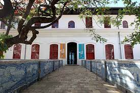

O N I P R E S E N T E
O Museu de Arte Moderna da Bahia está localizado no Solar do Unhão, um sítio histórico do século XVIII, às margens da Baía de Todos os Santos em Salvador. Para saber mais sobre o MAM, acesse o site
aqui

VISITAR O MAM